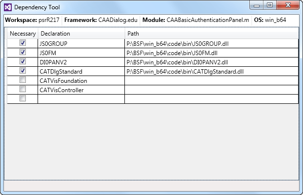

Managing Module Dependencies |
|
This command enables you to check the dependencies of a module, and compare the dependencies declared in the Imakefile.mk file and the ones actually imported from the module DLL. |
Before you begin:
|
Before being able to run the written application, and after you have built it, you need to refresh its run time view with the new built objects (exe or dll) and the newly created or modified resources.
In the 3DS Workspace Explorer, expand a framework to display its modules.
Right click a module, and click Show Dependencies.
The Dependency Tool dialog box opens.

It displays the module dependencies, that is, the modules declared in the LINK_WITH statement of the module Imakefile.mk file, and the paths of these modules in the workspace or in its prerequisite workspaces. In addition, the command scans the DLL and checks in the Necessary column the modules that are really imported by the DLL. The modules not used by the DLL are not checked, and their paths is not displayed, such as the CATVisFoundation and CATVisController modules in the image above.
The dialog box header lists the workspace, the framework, and the module analyzed, as well as the operating system used to analyze the module dependencies.
Warnings:
|
| Version: 2 [Jul 2017] | Document updated for Visual Studio 2015 |
| Version: 1 [Mar 2015] | Document created |